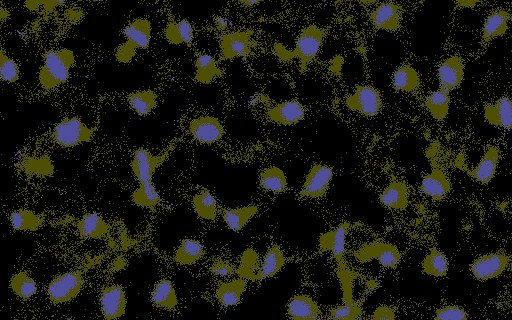
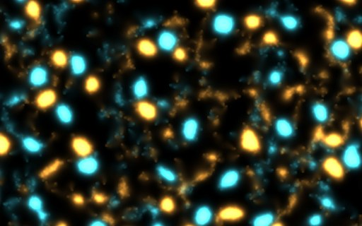
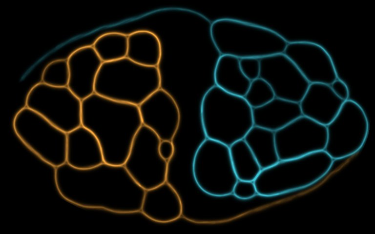
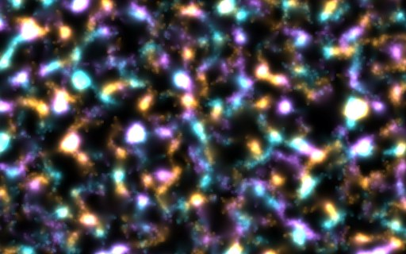
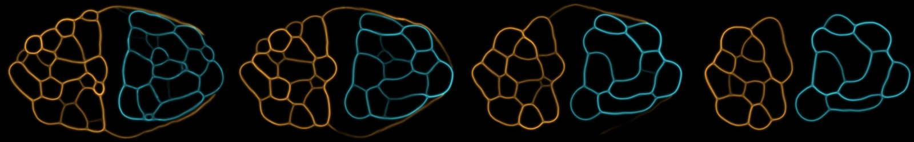

The still droplets from the last page are 30,000 walkers, one per cell, packed into about 180 round bodies. Here they get one more field to work with: grass. Every cell starts with grass at 1. Each step, every walker eats 0.05 from its cell, and grass regrows by 0.002 × (1 − grass). A walker's sensors add 10 × grass to the trail they read. A body eats the ground under it bare and leans toward fresh ground, so it keeps moving.
1 · Grazing
The bodies crawl about ten times as far
Grazing droplets, 0 to 12 s, walker counts
moved in 2 s
6.5-7.6 cells against 0.67-0.77 without grass
paired
more on 8 of 8 seeds, p 0.008
bodies
168-190 against 179-193, about 200 cells each
cost
12-15 ms a tick either way, one core

Where the bodies were over 4 s (olive) and where they are now (blue)A close-up of the middle of the dish. Each body has a smear on one side: it has been moving.
Grass weight 30 pulls many walkers out of their bodies, and at 100 the bodies dissolve into a gas (seed 1). Weight 10 keeps them whole.
2 · Two species
Amber and teal cells roam among each other
The same dish with two species, each laying and smelling its own trail and ignoring the other's (species_avoid 0). The cells stay one colour each: at 20 s, 91% of tube cells are 80% or more one species. Seed 1.
Two species of grazing droplets, 0 to 20 s

Close-up at 20 s
3 · Fights
Conversion alone doesn't move a border
With species_convert, a walker joins another species when that species' trail on its cell outweighs its own by the factor set. With cyclic species, only the species that chases a walker can take it. All tests below are seed 1.

Two halves of the 1M network, factor 1.2, no avoidance, 12 sTrail shares stayed 0.49-0.51 throughout. Attraction to the other side (avoidance −0.5) and a factor of 2 changed nothing. The sides meet only along a border where they are equal.

Three cyclic species of grazing droplets, 30 sThe shares drifted only between 0.32 and 0.34, and the cells blurred into a mixed soup. Two species of droplets with factor 1.5 stayed at 0.50 each.
For a fight, one side needs an edge that the player can create: more walkers, food that grows a body, or a rule that lets a bigger body take a smaller one on contact. These dishes are even on purpose, so neither side has an edge.
4 · An edge
A louder trail overreaches and loses
Amber (species 0) lays 1.5× the trail (species_boost). Same two halves, conversion 1.2, no avoidance. The measure was picked before the run: amber's share of walkers at 16 s, compared with an even game on the same seeds.
Amber boosted, 0 to 30 s, seed 1
amber's walkers
0.50 → 0.52 at 8 s → 0.34 at 30 s
Amber pushes the border and wraps tubes round the rim. Those tubes end up outweighed inside teal's half and switch to teal. By the end the two bodies have pulled apart, with an empty band between them.

Boosted vs even, 8 seeds
amber at 16 s
0.474 (0.448-0.518) vs 0.500 (0.450-0.580)
paired
lower on 6 of 8, p 0.29
at 8 s
higher on 6 of 8
8 → 16 s
boosted side falls on 7 of 8
A stronger trail wins ground early and loses it later. The next things to try are an edge in numbers, and a rule that lets a bigger body take a smaller one when they touch.